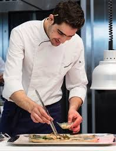
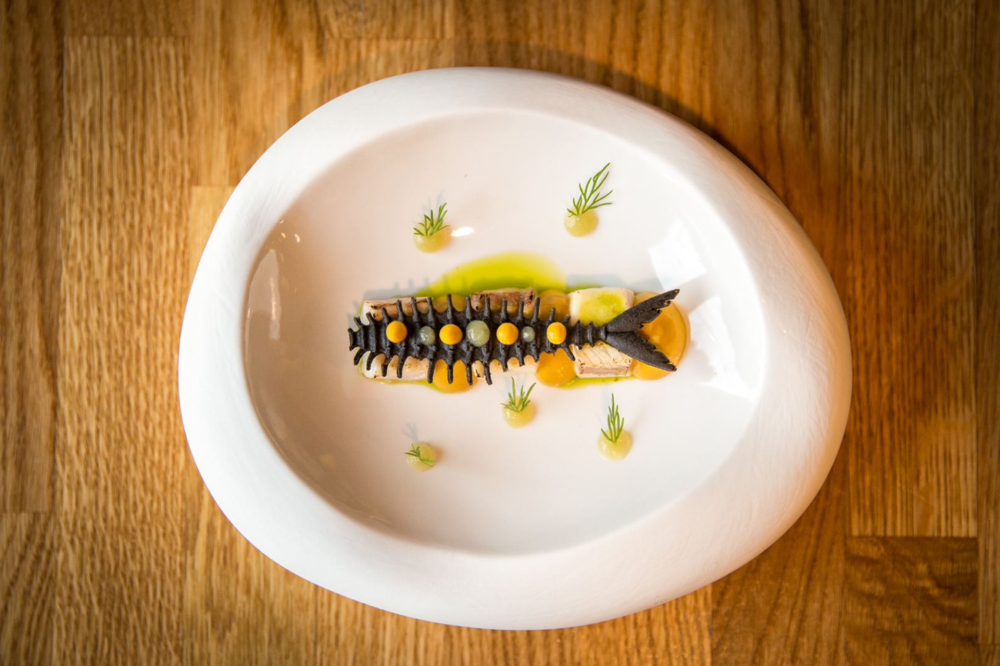
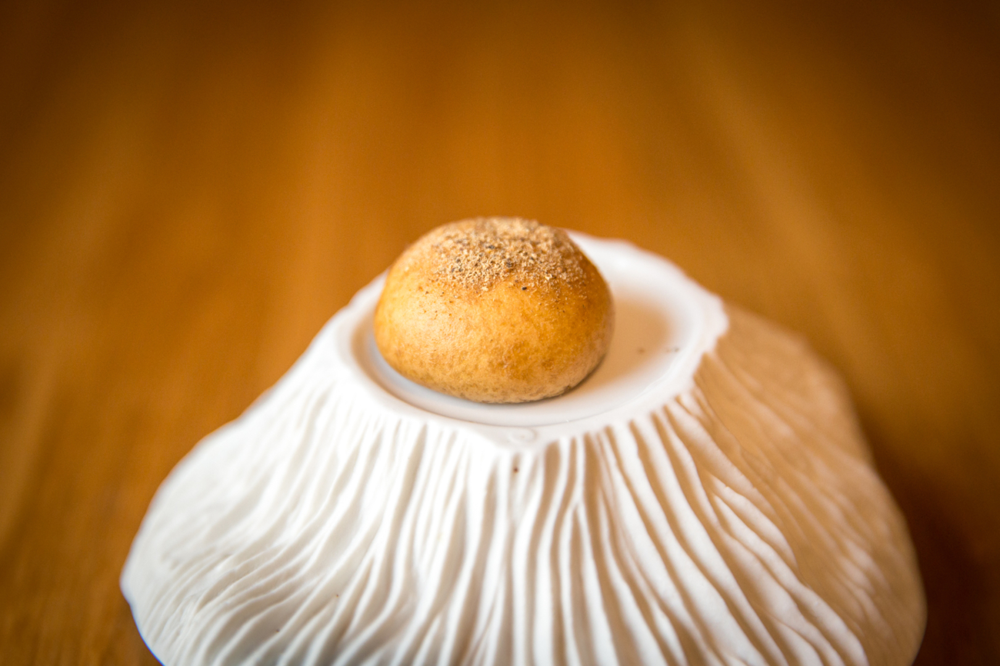
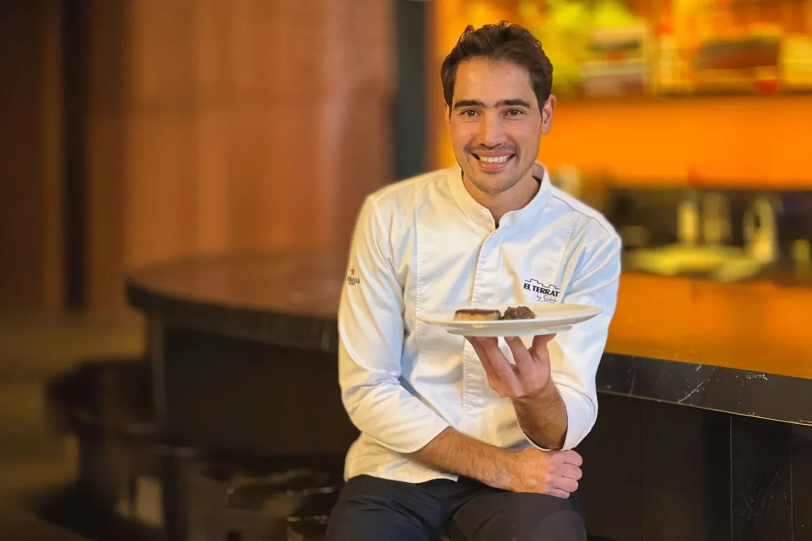
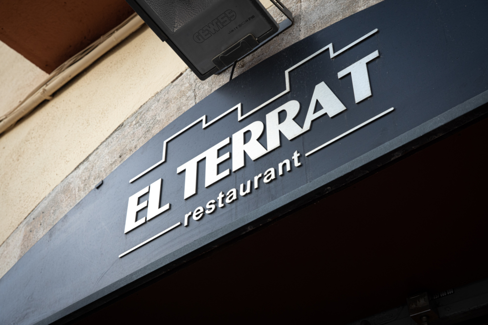

Un cocinero que llegó sin nada y lo encontró todo
Moha Quach nació en 1990 en Laasara, en el Rif marroquí. Su padre pescaba. Sus abuelos guardaban rebaños. Con doce años llegó a Cataluña con la familia y Tarragona lo adoptó. O quizás fue al revés: fue él quien adoptó Tarragona, porque desde el principio entendió que aquella ciudad, aquel litoral y aquel campo tenían una riqueza gastronómica que poca gente estaba aprovechando con honestidad.
Aprendió el oficio desde abajo. Sin atajos. Cocinas de formación, viajes con el delantal en la maleta, temporadas en Madrid y Barcelona. Y cuando volvió, no abrió un restaurante de fusión ni intentó reproducir lo que había visto fuera. Abrió El Terrat.

El Terrat: siete años construyendo un referente
En julio de 2018, Quach abrió El Terrat en la calle Pons d'Icart, en el centro de Tarragona. La propuesta era clara desde el primer día: cocina de autor, producto de proximidad, kilómetro cero. Los pescadores del Serrallo como proveedores. Los agricultores del Camp como aliados. Las especias del norte de África como memoria personal.
No fue un éxito inmediato de crítica. Fue algo mejor: un éxito de convicción. El restaurante fue creciendo con coherencia, sin cambiar el discurso para adaptarse a las modas. La cocina abierta a la entrada, el ambiente contemporáneo pero sin estridencias, los menús Olivus y Mare Nostrum como dos relatos del mismo territorio.

Los reconocimientos han ido llegando. Sol Repsol. Guía Michelin. Y en 2025, el Premio Revelación Nacional de Gastronomía de la Academia Catalana — el reconocimiento más importante que un cocinero catalán puede recibir en un año. Tarragona, que con demasiada frecuencia mira hacia Barcelona para validarse, vio cómo uno de los suyos recibía el premio más grande del país.
Tàrraco, el Rif y la lonja del Serrallo
Hay tres coordenadas que definen la cocina de Quach. La primera es el territorio: el Camp de Tarragona, el Delta del Ebro, las denominaciones de origen de la provincia. La segunda es la historia: Tarragona fue Tàrraco, capital de la Hispania Citerior, cruce de culturas mediterráneas durante siglos. La tercera es su propia biografía: los aromas del Rif, las especias que usaba su madre, el recuerdo del mar que pescaba su padre.
Ninguna de estas tres coordenadas domina a las otras dos. Conviven. Y de esa convivencia salen platos como el romesco de gamba de Tarragona — que la Guía Michelin destaca explícitamente —, el cremoso de guisante lágrima con huevo a baja temperatura y trufa, o el arroz cremoso de gamba roja. Platos que no intentan sorprender por la forma. Sorprenden por el fondo.


Moha Quach

Moha Quach
Chef y propietario · El Terrat TarragonaTímido e introvertido fuera de los fogones, Quach cambia cuando se pone el delantal. Su personalidad culinaria es directa, sin concesiones y sin artificios. Rechaza los aditivos. Rechaza las técnicas agresivas. Exige el mejor producto y luego se aparta para dejarlo hablar.
Viaja con el delantal en la maleta, descubre ciudades a golpe de sartén y convierte las cocinas ajenas en su hotel favorito. Pero siempre vuelve a Tarragona. Porque Tarragona, dice, lo tiene todo. Solo hace falta saber mirarlo.
Tarragona y la estrella que todavía no ha llegado
Tarragona no tiene ninguna estrella Michelin. Es un hecho que el sector gastronómico local lleva años digiriendo con una mezcla de resignación e incredulidad. Una ciudad con dos mil años de historia, con un litoral rico, con producto excepcional y con una tradición culinaria que nadie discute — y ninguna estrella.
Los motivos que se alegan son variados. Que Tarragona sufre el síndrome de la ciudad mediana, demasiado cerca de Barcelona para tener visibilidad propia. Que los inspectores de la Guía pasan, pero no se detienen. Que hasta hace poco no había ninguna propuesta con la consistencia necesaria para forzar la decisión. Ahora el sector especula. Y el nombre que aparece en la mayoría de conversaciones es el de Moha Quach.
La pregunta que circula es: si no es El Terrat, ¿quién? Nosotros no tenemos respuesta. Pero tenemos curiosidad. Y tenemos una visita en mayo.

Ficha del restaurante
Compartiremos algunos momentos durante la velada. La crónica completa llegará días después de la visita.
Crónica · Próximamente